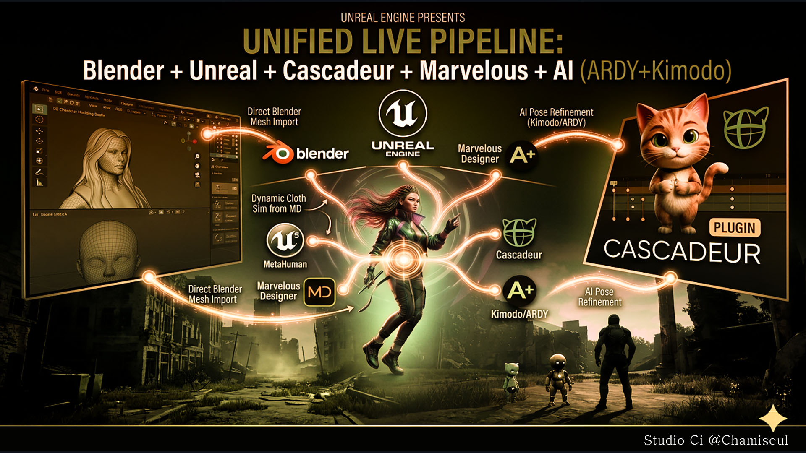

News
Development updates from the Studio Ci pipeline — Blender, Unreal Engine, Cascadeur and Marvelous Designer, tied together so a character can move between them without falling apart on the way.

Newest first. Everything here is released and running. The ARDY Engine and the Cascadeur plug-in are on Patreon.
Out now
Every guide now lives in one place
All add-ons
📖 Studio Ci — all guides
One page for the whole toolset. Each add-on still keeps its own documentation, and this is where you pick the one you need.
- Covers GroomForge PRO, GroomFlow PRO, MetaBridge DNA, MetaBridge Forge, MotionForge, NovaBone Dynamics, Wiggle 2 RTX and VFXForge PRO.
- English and 한국어 side by side, wherever a Korean guide exists.
- Every screen recording is video now rather than GIF, so the pages load in a fraction of the time they used to.
→ mayalhc.github.io/GroomForge-Wiki
Hair cards, rebuilt
GroomForge PRO 1.6.0
Cards that render, taper and land where you put them. Read the guide.
- Cycles renders hair correctly. It used to come out as a solid black mass while EEVEE looked fine.
- Hair ends taper away instead of stopping on a blunt cut edge. Root and tip thickness are set separately, in pixels.
- Cards sit on the scalp — none floating above the head or sunk into it — and root and tip stay the right way round.
- Every groom keeps its own cards. Cards are named after the hair curve, so generating from a second groom no longer deletes the first one's.
- Max Poly Count is respected. You get the number of cards you asked for.
- Bake resolution goes to 4096, card ends can be staggered, and flat cards can be shaded like rounded bundles.
- macOS now works on Blender 5.2 and newer.
Bones stay where the collision put them
NovaBone Dynamics 1.1.0
The jolt on the last bones of a chain is gone — four separate causes, all fixed.
- Raising Substeps improves the solve now instead of making the popping worse.
- Friction does its job again. Setting it to 0 no longer makes everything rougher, so you can set it for the feel you want.
- A chain resting against a surface stays resting, rather than being pushed out and pulled back every substep.
- A collider that deforms — a character driven by an armature and shape keys — is finally measured as moving, so a bone is no longer pushed clear only for the body to move into it again.
Hair, tails and skirts move on their own
NovaBone Dynamics
Pick the first and last bone of a chain. That is the whole setup — the rest is physics.
- Hair, tails, skirts, accessories and jiggle bones all run the same way.
- Collision is solved against the real shape — capsule, cylinder or box — so a chain rests on a body instead of sinking through it, however fast it swings.
- The same rig behaves the same whether it came in at Blender's scale or at the hundredth-scale an Unreal import arrives with.
- Chains stay put: no bone snaps inside-out, and a draped chain settles smoothly instead of zig-zagging.
- It doubles as a collider for Blender's own cloth and hair, and bakes to keyframes when it is time to export.
MetaHuman outfits prepared for Fab, without the repetition
MetaBridge Forge (Unreal Engine)
The parts of preparing a MetaHuman outfit that are the same every time are done for you.
- FBX import with the folder and naming set up correctly from the start.
- Wardrobe Item creation, wiring and verification once the Outfit Asset is built.
Team Fortress 2 characters go to Cascadeur in one piece
MotionForge · Cascadeur plugin
Send a Trifecta mercenary across and the whole character goes — the hat stays on, the pouch stays on the belt, the weapon stays in the hand.
- Fingers, toes and twist bones arrive attached and follow the limb they belong to.
- Cascadeur's Quick Rigging Tool fills itself in. Nothing to type, nothing to match up by hand.
- Both Trifecta rigs are recognised on sight, and retargeting and Share with Character work with them like any other rig.
- Animate over there, bring it back, and it lands on the controls you normally animate with.
Four-legged characters rig themselves in Cascadeur
Cascadeur plugin
Cascadeur registers a biped's joints for you and leaves a quadruped to be filled in by hand — over a hundred and sixty fields. Not any more.
- Open the Quick Rigging Tool, switch it to four-legged, and run Rig Quadruped (auto).
- It reads the skeleton rather than the names, so it works on rigs that name their bones nothing like Cascadeur does.
- Save what it found as a preset and every character built that way is done in one click.
Any rig can make the trip, not just MetaHuman
MotionForge
The same send-and-receive, for whatever rig you are working with.
- UE5, Fortnite, MetaHuman, Mixamo, Rigify, Rigify metarig, SMPL-X and Cascadeur's own skeleton.
- Send a character across and the whole skeleton comes back under its own names — fingers included.
Bring a take back at whatever speed you want
MotionForge
Cascadeur runs on its own clock. Choose what that means when the work comes home.
- Match Timing — it comes back at the speed it left, whatever frame rate Cascadeur happens to be set to.
- Fit Scene Range — spread across your frame range instead. Ten frames into two hundred and fifty is slow motion, and that is the point.
- One For One — one Cascadeur frame becomes one Blender frame, untouched.
A character moves in Unreal while the motion is still being made
MotionForge · MotionForge Live Link (Unreal Engine)
Describe the motion you want in Blender and watch it on your character in Unreal — no export, no file, no waiting for the whole clip.
- The motion arrives in Unreal as a Live Link subject, so it drives a character the same way any other live source does.
- Pairs with the SMPL plugin, which works out pose correctives from whatever pose arrives.
Cascadeur animation comes back into Blender
MetaBridge DNA · coming to MotionForge too
The Cascadeur bridge works both ways. Send a character across, animate it there, and bring the animation back — on the same character, in the same scene, with nothing to re-import.
- Two ways to bring work back: the animation only, keyed onto the rig you already have, or the mesh and the animation together as new objects.
- Reading a full MetaHuman take takes under a second.
- Root motion comes with it — the character travels instead of walking on the spot.
- Restarting Cascadeur costs you nothing. Blender remembers what it needs and hands it back.
Received animation lands on your Rigify controls
MetaBridge DNA
Animate in Cascadeur, then keep working in Blender the way you normally do.
- Tick Onto Rigify Controls and the animation arrives on the control rig, not the deform bones — so it can be adjusted, offset and layered like any animation you keyed by hand.
- The body rig goes back to being driven by the controls, so nothing fights for the same bone.
The face plays live in Unreal, with nothing exported
MetaBridge DNA · Unreal Engine
A MetaHuman face animated in Blender performs in Unreal as you work on it.
- Only the control values cross — about a kilobyte a frame — and Unreal's own Rig Logic produces the joints, the shapes and the wrinkle maps.
- Body and face stream together onto the same MetaHuman.
Garments come back from Marvelous Designer in two clicks
MetaBridge DNA · Marvelous Designer
Your character goes out as an avatar, the garment comes back fitted. Both directions are two clicks.
- The Marvelous Designer plug-in ships with MetaBridge DNA — register it once and it is there every time.
- Units are handled on both sides, so nothing arrives at the wrong size.
The plug-ins come in the box
MetaBridge DNA · Cascadeur · Unreal Engine
Nothing to hunt down before the bridges work.
- The Cascadeur plug-in and the Unreal Live Link plug-in both ship inside MetaBridge DNA, alongside the Marvelous Designer one.
- Install only the ones you need. A program you never open costs you nothing.
Studio Ci · @Chamiseul